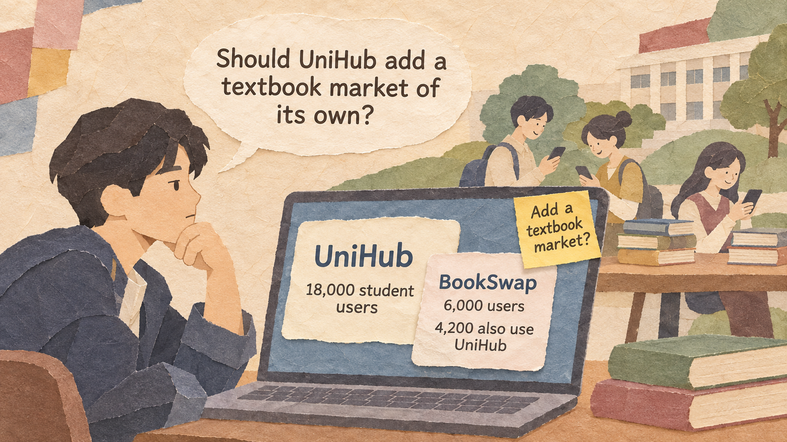
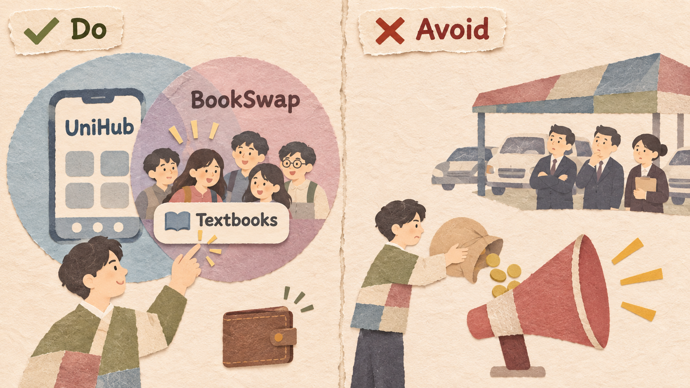
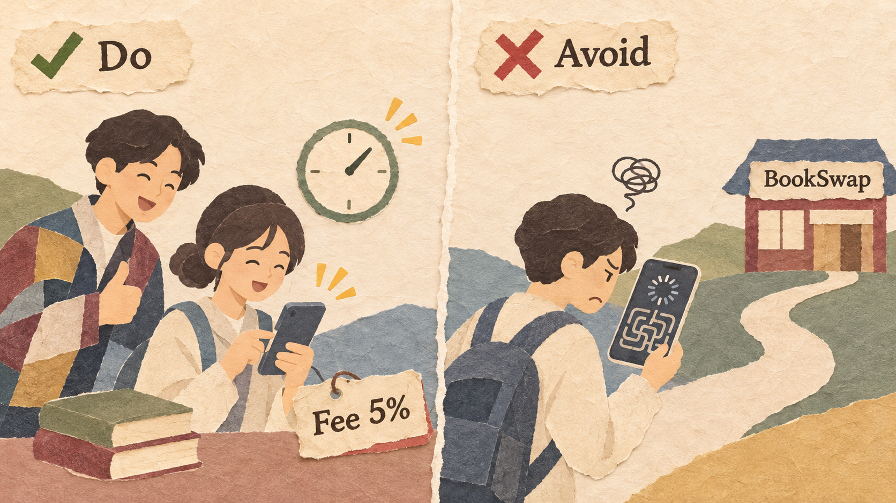
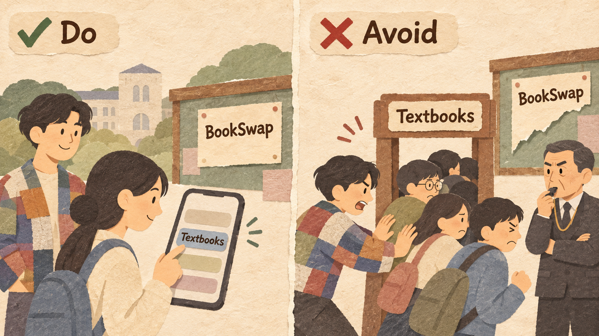

UniHub is a free campus app for timetables and notices, run by Jae. BookSwap is a separate app for selling used textbooks.
| UNIHUB | BOOKSWAP | |
|---|---|---|
| Users | 18,000 | 6,000 |
| Users who use both apps | 4,200 | 4,200 |
| Already has | Student login, student ID check, payment | Its own login and payment |
| Earns money from | Campus ads | 10% fee on each sale |
| Cost to win one user | Almost $0 (in-app banner) | $8.00 in online ads |
A company that already has many users adds the product of a nearby market to its own platform, often in a bundle, and so wins that market's customers. It works because the attacker already has the customers and many of the parts it needs (accounts, payments, data, a sales team), so it can offer the new product at a much lower cost. The new product does not have to be the best; it must be good enough and easier because it comes in the same app.
Look for a nearby market whose customers already use your app. The more customers you share, the easier and cheaper it is to reach them.

70% of BookSwap's users already open UniHub every day. If UniHub adds a textbook market, these students will see it right away. UniHub does not need to pay for ads.
Entering a market where few of your users are, such as a used-car market for office workers. Then you must pay for ads like any new company, so you have no advantage.
You already have user accounts, a payment system, and customer data. Use them again in the new market. Then each new customer costs you very little.
UniHub uses its student login, student ID check, and payment system again. Students do not need a new account, and buyers feel safe because every seller is a real student.
Building the new market as a separate app with a new login and a new payment system. Students must sign up again, and UniHub pays as much as any new company.
The new product does not need to be the best. But it must do its main job well. Users switch when one app is easier or cheaper than two.

In UniHub Market, a student can list a book in one minute with the login they already have. The fee is 5%, half of BookSwap's 10%.
Adding a weak feature, such as a market where finding a book is slow and hard. Students try it once and go back to BookSwap. Being in the same app does not save a bad product.
Users must be free to use the new product or not, and you must not block the rival. Forced users get angry, and a big company that blocks rivals can break competition law.

UniHub Market is just one tab. Students who do not want it can ignore it. UniHub also keeps showing BookSwap posts on its notice board.
Making every student use UniHub Market, or deleting BookSwap posts from UniHub. Students complain, and the government may step in.
Slack was a popular standalone chat app for companies. In 2017, Microsoft launched Teams inside Office 365 business subscriptions at no extra cost. By October 2020, Teams had more than 115 million daily users. Slack spent about half of its revenue on sales and marketing, and in December 2020 it agreed to be bought by Salesforce for $27.7 billion.
Uber added food delivery using the same Uber account and saved card, the same maps, and many of the same drivers. In the fourth quarter of 2020, when many people stopped taking rides, Uber's delivery orders were worth $10.1 billion, more than its rides ($6.8 billion).
Google launched Google+ in 2011 to compete with Facebook. In 2013, YouTube began requiring a Google+ profile to post comments. Users complained loudly. Google removed the requirement in 2015 and closed Google+ for consumers in April 2019.
In 2014, Amazon launched the Fire Phone, with a Firefly button that recognized products and let users buy them on Amazon. Sales were weak, and in October 2014 Amazon reported a charge of about $170 million, mainly for unsold phones.
| EXAMPLE | RESULT | THE RULE THAT DECIDED IT |
|---|---|---|
| Microsoft Teams | Good | Customers and shared parts already in place (Rules 1 and 2) |
| Uber Eats | Good | Drivers, maps, and payments used again (Rule 2) |
| Google+ | Bad | Users forced, product not good enough (Rules 4 and 3) |
| Amazon Fire Phone | Bad | The bundle gave users little new value (Rule 3) |
Overlap rate = shared users / target's users x 100
CAC = marketing spending / new customers
Compare the attacker's CAC with the target's CAC.
A new product often loses money at first because it costs money to build.
Profit = revenue per period x periods - one-time cost - running cost per period x periods
What you give up to get something you value more.
A promise, written before you start, about which result would make you change your decision.
Example: "If fewer than 10% of our users try the new feature in the first semester, we will stop building it."
Six companies plan a move:
| MOVE | ANSWER | WHY |
|---|---|---|
| (a) ChatLine money transfers | Envelopment | Same users, same account and saved card |
| (b) Second bakery | Not | Same product in a new place; no nearby market |
| (c) Free calendar | Envelopment | Same users and login; enters calendar apps |
| (d) 20% price cut | Not | A price cut in its own market |
| (e) Free note app | Envelopment | Every phone buyer gets it; enters note apps |
| (f) Video games | Not | No shared parts; not a market next to shoes |
18,000 UniHub users / 6,000 BookSwap users, 4,200 shared / each active trader sells about $40 of books per semester
Build cost $12,000 once (1 developer x 3 months x $4,000), plus $1,000 per semester to run.
Fee 5% (half of BookSwap's). Expect 20% of UniHub users to trade each semester.
A BookSwap tab inside UniHub. BookSwap pays $2 for each new user who joins through UniHub.
Expect 1,400 new users per semester. No building cost.
Explain envelopment with the words attacker, target, overlap, shared parts, and bundle.
Check an opportunity with the overlap rate, the CAC, and the four rules.
Compare envelopment with a partnership over several periods and write a decision rule.
Eisenmann, T., Parker, G., & Van Alstyne, M. (2011). Platform envelopment. Strategic Management Journal, 32(12), 1270-1285.
Slack Technologies (2021). Form 10-K for the fiscal year ended January 31, 2021. SEC EDGAR.
European Commission (2023). Commission opens investigation into possible anticompetitive practices by Microsoft regarding Teams.
Uber Technologies (2021). Uber announces results for fourth quarter and full year 2020.
YouTube (2015). Official YouTube Blog, July 2015: Google+ no longer required.